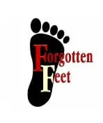
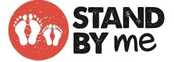

Voluntary Ventures
We give our time to other organisations
We love to serve local people, our professional community, and where possible various people in need – locally and around the world.
At kingstonfeet we enjoy working with the organisations below. We are happy to talk about any of these ventures – in particular, we would love to tell you more about our “matched giving” enterprise with “Stand By Me”
Professional
The Royal College of Podiatry brings together and develops, educates and support Podiatrists across the UK.
Joanna Lea – our Lead Podiatrist has been Chair of the Southwest London branch for over 5 years.
Joanna has organised multiple training sessions, working groups, committee meetings and social events serving over 250 Podiatrists across Surrey and London.
It is a role that Joanna enjoys. After all, 40 years experience in the NHS and private practice means there is so much for Joanna to offer!
Local

In Richmond-Upon-Thames, Joanna and each of the Podiatry team manages footcare issues of people that find themselves homeless.
“Forgotten Feet” is a national organisation we have supported for over 6 years.
Everyone at kingstonfeet enjoys this voluntary work as it brings a special, and quite different type of job satisfaction.
Global

We really enjoy treating children from our local area.
All the children we treat wear shoes and often have a variety of footwear - school shoes, trainers, Crocs and sandals for example.
Unfortunately, in many parts of the world children do not have any shoes to wear.
Suitable shoes are essential to a child's health, wellbeing and sense of dignity. With a new pair of shoes, these kids will be filled with joy, walking tall, knowing they belong and are protected.
We'd love you to join us in funding a pair of shoes and showing children that they are cared for and loved.
So for every pair of shoes donated by you we will match it to a total of 360 pairs.
£10 = a pair of shoes
Click here to take part in this exciting venture with us.
We wholeheartedly agree with the aims and intentions of Stand By Me
“Stand by Me rescues kids from extreme circumstances, then provides the care, love, and attention they need to thrive. We care for over 3,800 kids across the world, from Myanmar to Colombia to Ethiopia. No two are the same, some are orphaned, some abandoned, some abused or living in extreme poverty, so we take care to meet each of their individual needs from food and healthcare, to loving parents and quality education, enabling them to reach their potential, stand on their own two feet and become who they were created to be.”
Stand By Me is a registered Charitable Incorporated Organisation in the UK (no. 1185124)
All our podiatrists are HCPC registered and are members of the Royal College of Podiatry.
We have strong working relationships with local NHS and private Podiatric Surgeons, should a surgical opinion be required.